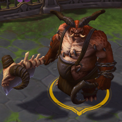
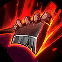
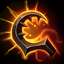
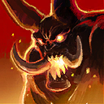
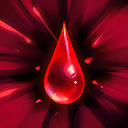
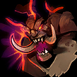

The Butcher
Welcome to our The Butcher guide for Heroes of the Storm. Here you will learn everything you need to know in order to play The Butcher in a competitive environment, whether you play on your own or with a team.
Hamstring Build
| Level 1 | Level 4 | Level 7 | Level 10 | Level 13 | Level 16 | Level 20 |
|---|---|---|---|---|---|---|
|  |  |  |  |
The Hamstring Build focuses on maximizing damage output by means bolstering the effectiveness of Hamstring Icon Hamstring at the cost of survivability and utility. This build works well against enemy Heroes who are able to more easily kite The Butcher around by means of movement speed buffs or gap-closers. The increased length of Hamstring from Flail Axe Icon Flail Axe and its reduced cooldown from Invigoration Icon Invigoration will allow The Butcher to more easily land Hamstring and re-apply the slow portion of the ability. Insatiable Blade Icon Insatiable Blade and Bolt of the Storm Icon Bolt of the Storm will further assist The Butcher in sticking to his desired target, particularly when attempting to land Furnace Blast Icon Furnace Blast.
Lamb to the Slaughter Build
| Level 1 | Level 4 | Level 7 | Level 10 | Level 13 | Level 16 | Level 20 |
|---|---|---|---|---|---|---|
|  |  |
The Lamb to the Slaughter build contains a healthy blend of survivability, utility, and reliable damage output. Abattoir Icon Abattoir not only lightens the blow from early deaths but allows The Butcher to snowball well into the late game as he gathers more and more stacks of Fresh Meat Icon Fresh Meat. The cooldown reduction of Ruthless Onslaught Icon Ruthless Onslaught greatly increases The Butcher's roaming and ganking potential while Meat Shield Icon Meat Shield and Enraged Icon Enraged mitigate much of the damage he will receive upon engaging his enemies. Lamb to the Slaughter Icon Lamb to the Slaughter allows The Butcher to lock down and shred a single target (usually an isolated assassin or support), while Slaughterhouse Icon Slaughterhouse at Level 20 provides an incredible source of multi-target crowd-control.
Go Back